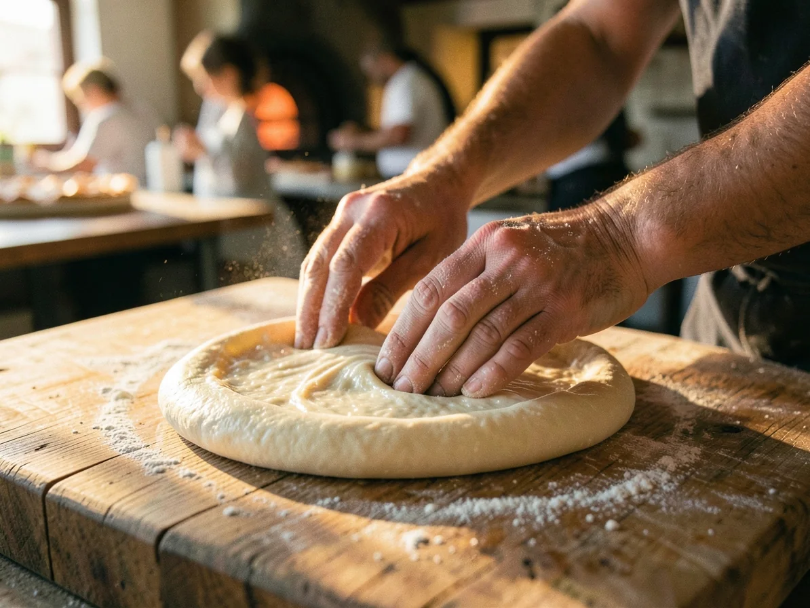
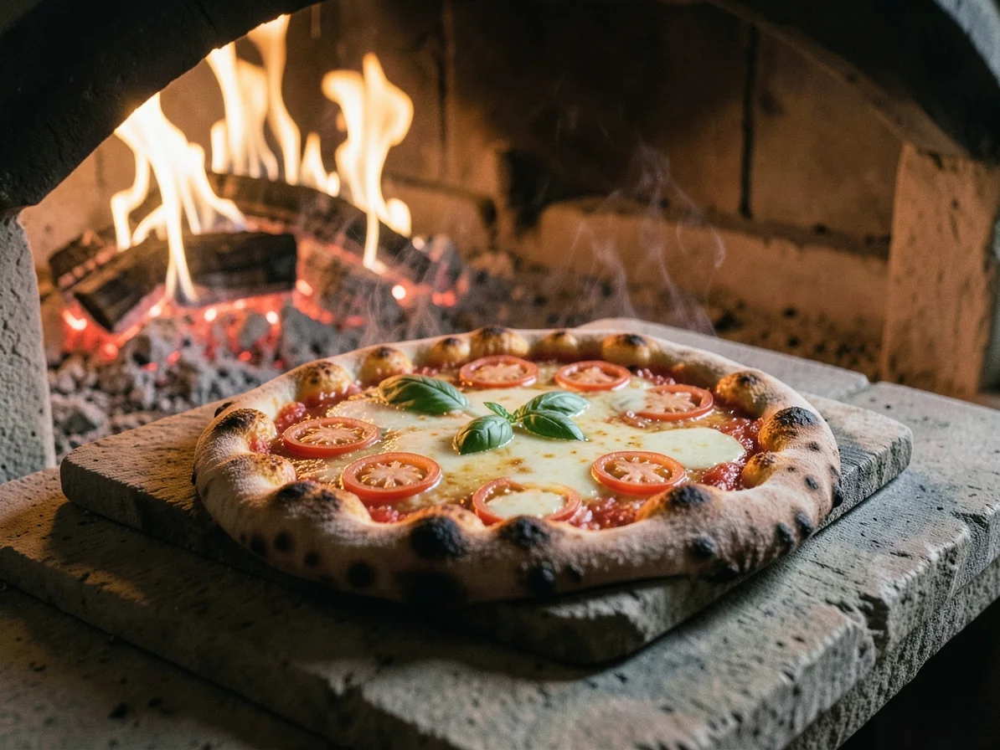
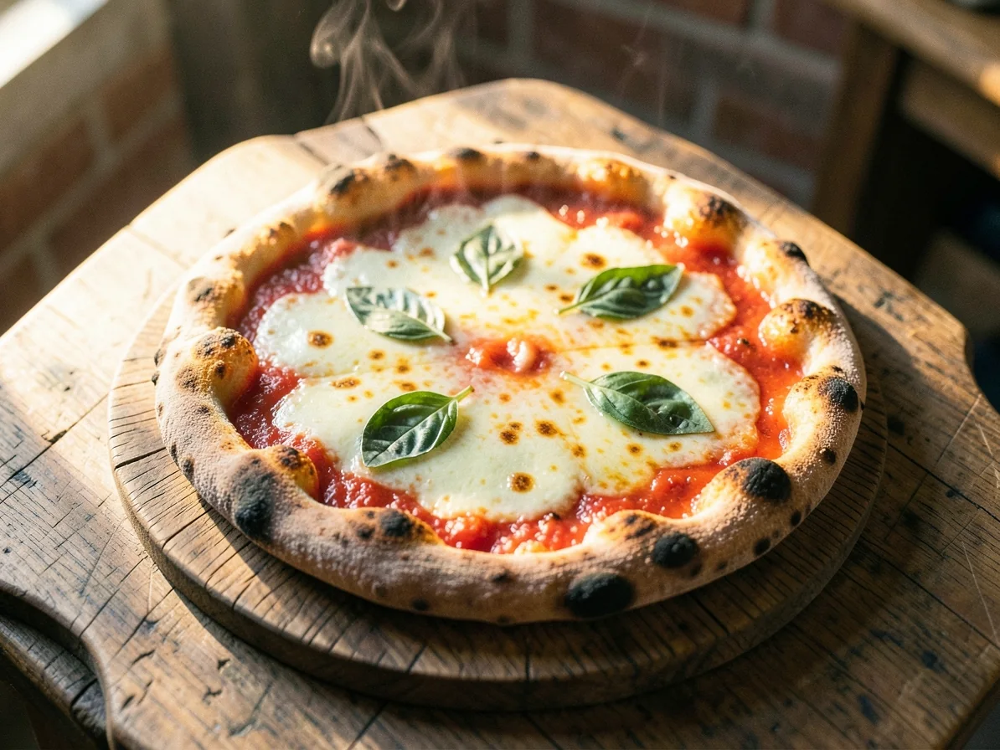
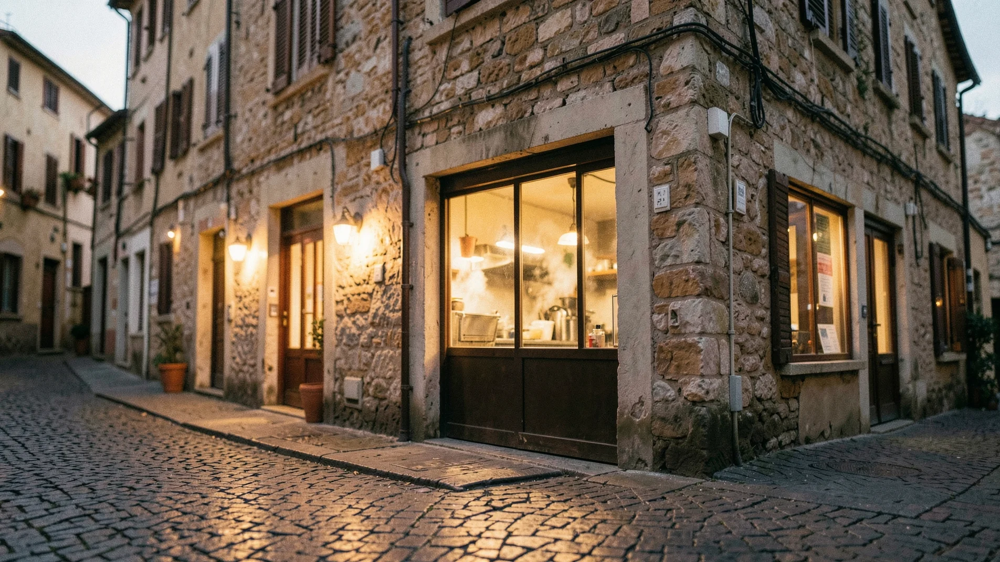
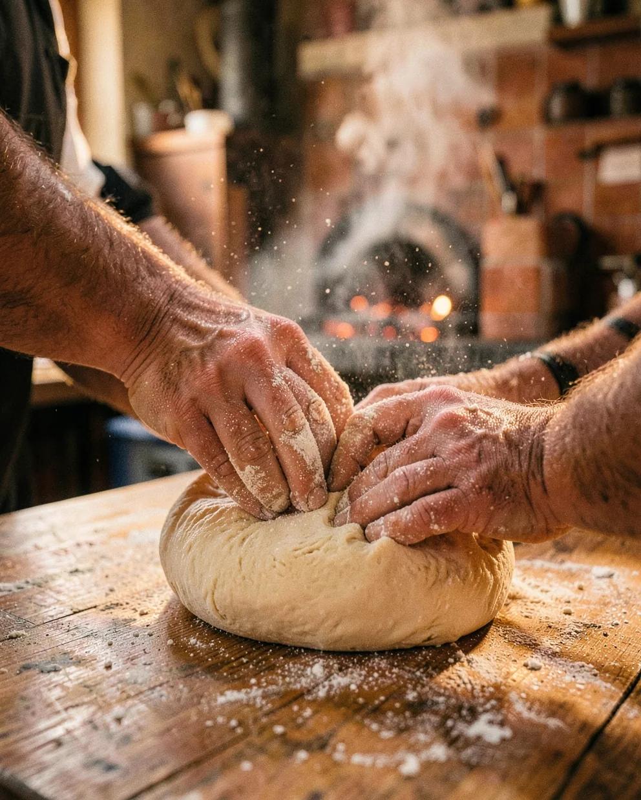

L'impasto
Farina tipo 0, acqua, sale, lievito madre. Quarantotto ore di lievitazione lenta che danno corpo al cornicione e leggerezza al morso.

Padova · Forno a legna
Pizza napoletana cotta a 450 gradi. Impasto a lunga lievitazione, ingredienti che si sentono.
Prenota un tavoloLa verità
Hai mangiato mille pizze. Ma quante volte hai sentito il sapore del fuoco, il profumo del lievito madre, la croccantezza di un cornicione fatto a mano? Non è questione di prezzo. È questione di rispetto. Per l'impasto, per il forno, per chi si siede al tavolo e si aspetta qualcosa di vero.
Come lavoriamo
Farina tipo 0, acqua, sale, lievito madre. Quarantotto ore di lievitazione lenta che danno corpo al cornicione e leggerezza al morso.

Forno a legna a 450 gradi. Novanta secondi di cottura che sigillano la superficie e lasciano il cuore morbido, con quel leggero sentore di brace.

Pomodoro San Marzano, mozzarella di bufala, olio extravergine, basilico fresco. Niente salse industriali, niente scorciatoie. Solo quello che serve.

Dal forno al tavolo
Al tavolo
Il profumo del forno che ti accoglie, il banco dove scegli, i tavoli dove ti siedi. Tutto è pensato per stare bene, senza formalità e senza guardare l'orologio.
Prezzi e menu completi disponibili in loco. Chiamaci per info.
Scopri il menu completoPerché Savona
di lievitazione lenta
di temperatura nel forno
di cottura per ogni pizza
fatto a mano, ogni giorno

Dove siamo
A due passi da Prato della Valle, facili da raggiungere a piedi o in bici. Zona blu nelle vicinanze per chi viene in auto.

Garanzie
Niente promesse vuote. Solo quello che puoi vedere, toccare, assaggiare. Il lievito madre che lavora da settimane. Il forno che non si spegne mai. Le mani che impastano ogni mattina prima di aprire.
Prenota un tavolo o passa al banco. La pizza è pronta in novanta secondi, il buon umore è incluso.
Domande frequenti
Sì, abbiamo un impasto dedicato senza glutine. Avvisaci al momento dell'ordine così lo prepariamo con calma.
Certo. Al banco o per telefono. La pizza al taglio è disponibile tutti i giorni, anche a pranzo.
Sì, consegniamo in zona Padova centro. Chiamaci per verificare se la tua zona è coperta.
Non abbiamo parcheggio interno, ma ci sono zone blu nelle vicinanze e il parcheggio di Prato della Valle a cinque minuti a piedi.
Sì, per gruppi o per i weekend è consigliabile prenotare. In settimana, a pranzo e a cena, spesso c'è posto senza prenotazione.
Sì, diverse pizze sono già vegetariane. Per una base vegana basta chiedere: sostituiamo la mozzarella con olio extravergine e verdure.